Guarapari
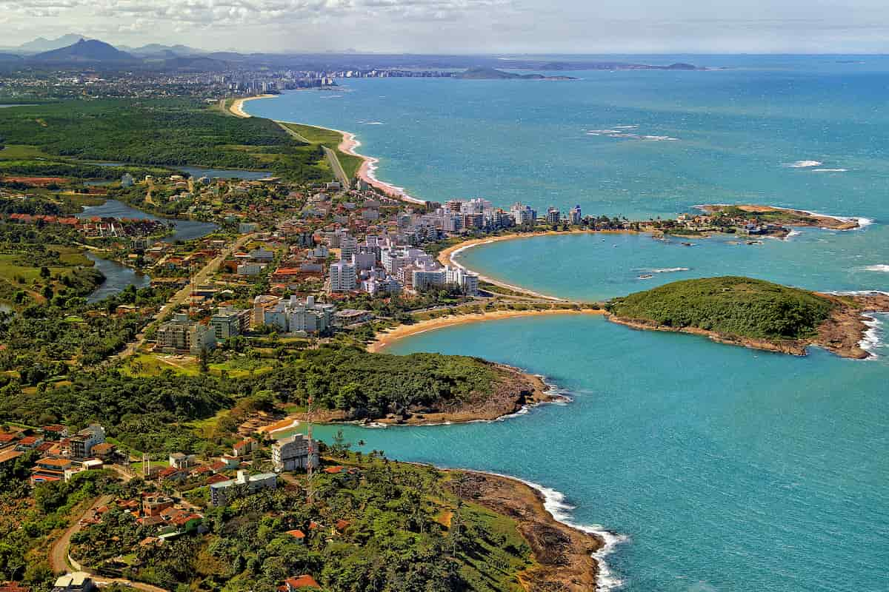Guarapari, localizada no estado do Espírito Santo, é uma das cidades mais procuradas do litoral capixaba, sendo um dos destinos turísticos mais importantes da região. Conhecida principalmente pelas suas belas praias, a cidade atrai turistas de todo o Brasil e do exterior, oferecendo uma combinação de lazer, descanso e contato com a natureza. Além disso, Guarapari é famosa por suas águas termais e seus centros de bem-estar, como o Parque Estadual Paulo César Vinha, que preserva uma vasta área de ecossistemas costeiros.
Com infraestrutura de qualidade e uma ampla oferta de hospedagem, restaurantes e entretenimento, Guarapari também se destaca por sua vida noturna vibrante, especialmente durante a alta temporada de verão. Suas praias são ideais para quem busca desde atividades relaxantes até esportes náuticos, como o surf. A cidade também carrega um forte valor histórico e cultural, com monumentos e festas tradicionais que celebram a cultura capixaba. Por esses motivos, Guarapari é um destino muito procurado por turistas que buscam combinar a tranquilidade das praias com a oferta de lazer e cultura local.
Principais pontos turísticos
- Praia do Morro 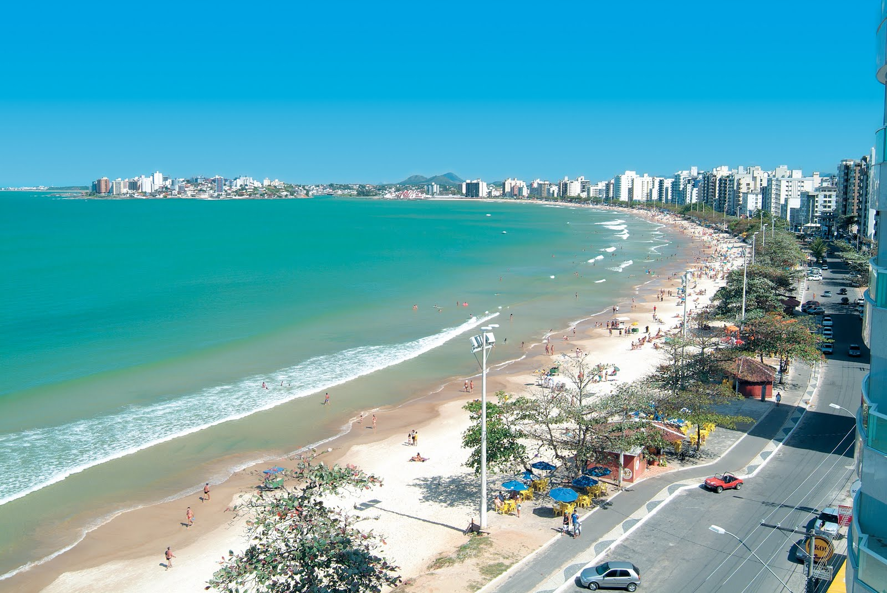
- Praia das Castanheiras 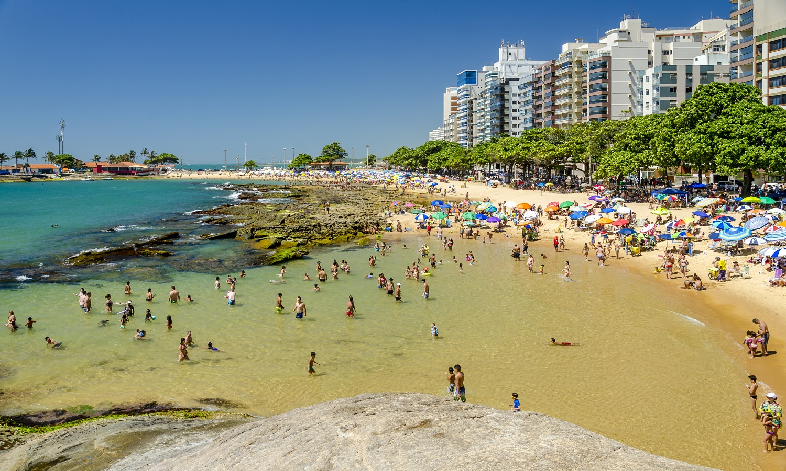
- Parque Estadual Paulo César Vinha 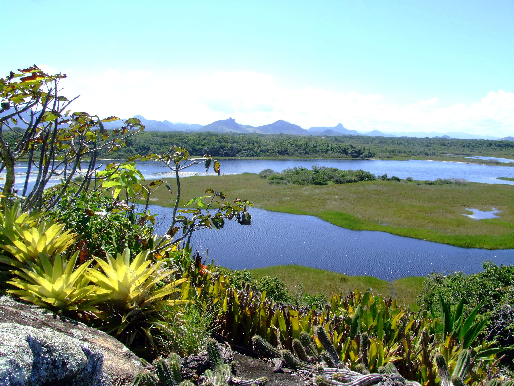
- Praia de Baía dos Padres 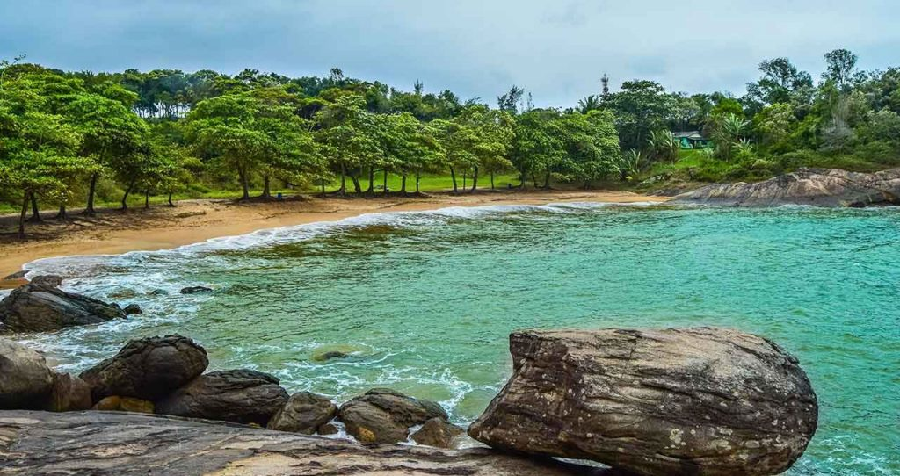
- Ilha de Trindade 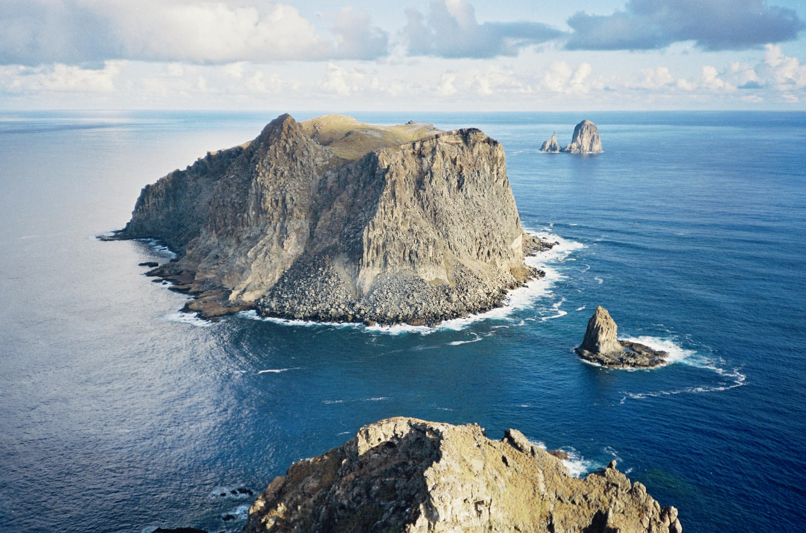
A Praia do Morro é uma das mais famosas de Guarapari, com águas claras e calmas, ideal para banhistas e famílias. A praia tem uma ótima infraestrutura com quiosques, bares e restaurantes, além de ser excelente para a prática de esportes aquáticos, como o stand-up paddle e o frescobol.
É o principal ponto turístico de Guarapari, com uma infraestrutura excelente e grande movimento de turistas, especialmente durante a alta temporada. A Praia do Morro é também o centro da vida social e turística da cidade.
A Praia das Castanheiras é uma praia tranquila e de fácil acesso, com águas calmas e um ambiente acolhedor. É famosa pela grande quantidade de castanheiras que circundam a área, criando uma paisagem única.
A praia é ideal para quem procura um ambiente mais sossegado, com menos movimento do que a Praia do Morro, sendo perfeita para quem busca relaxamento e contato com a natureza.
O Parque Estadual Paulo César Vinha é uma unidade de conservação que protege os ecossistemas costeiros e a biodiversidade local. O parque oferece trilhas, praias desertas e áreas de lazer ao ar livre, além de ser um excelente local para quem gosta de ecoturismo e observação da fauna e flora.
O parque é um dos principais pontos turísticos para quem deseja conhecer a natureza intocada de Guarapari. Ele é ideal para atividades de ecoturismo, caminhadas e fotografia.
A Praia de Baía dos Padres é conhecida por sua tranquilidade e águas calmas, sendo ideal para famílias e pessoas que buscam sossego e contato com a natureza. É uma excelente opção para quem deseja escapar das praias mais movimentadas.
A baía é ideal para quem deseja relaxar ou praticar esportes como o caiaque e o snorkeling. Sua tranquilidade e paisagem intocada são um grande atrativo para os turistas que buscam um ambiente mais pacífico.
A Ilha de Trindade é um pequeno paraíso natural, com praias de águas cristalinas e exuberante vegetação. A ilha é perfeita para quem gosta de mergulho e deseja explorar a vida marinha da região.
Considerada uma das mais belas ilhas do Espírito Santo, a Ilha de Trindade é um excelente destino para quem busca aventuras no mar e contato com a natureza selvagem.
Principais pontos gastronômicos
- Kebabs Praia 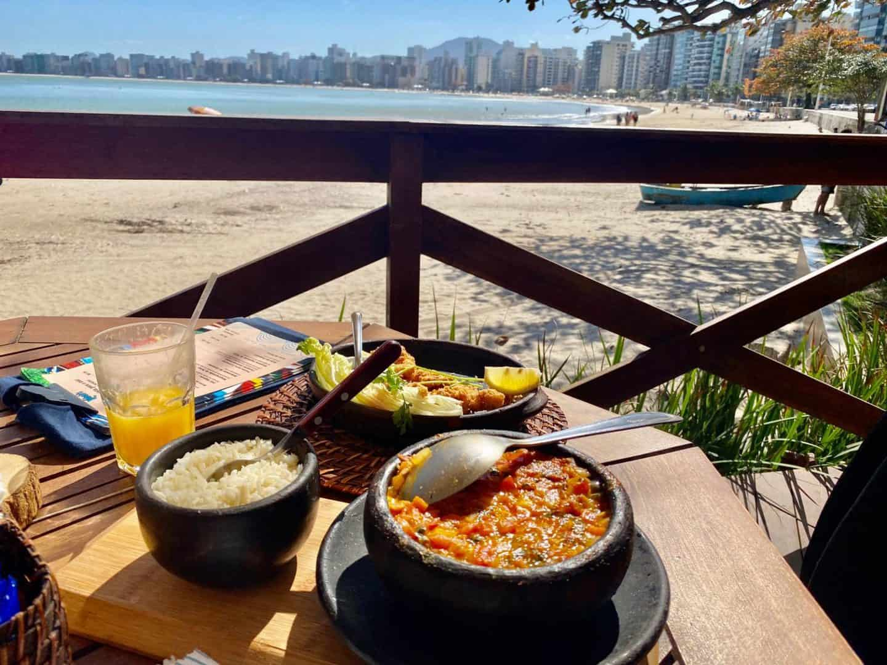
- Localização: Praia do Morro.
- Casa do Torresmo Rotisseria 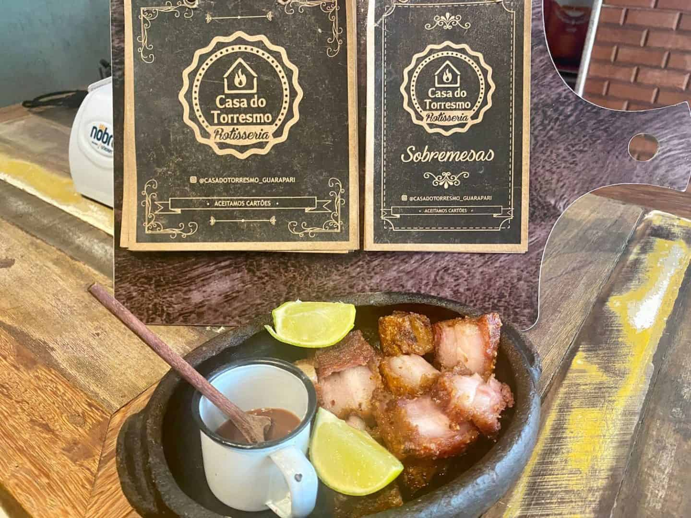
- Localização: Praia do Morro.
- Taiccos 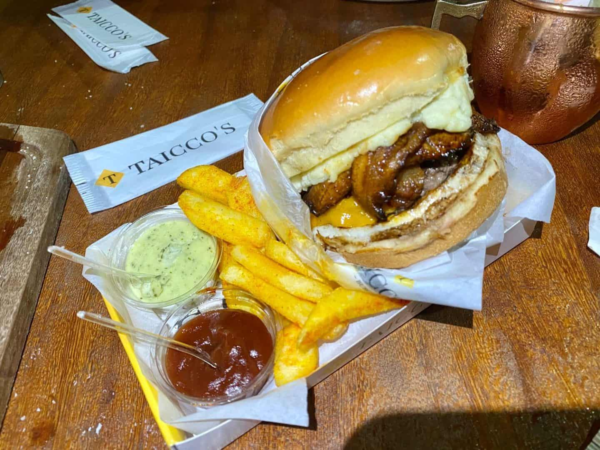
- Localização: Praia do Morro.
- Dal Mare 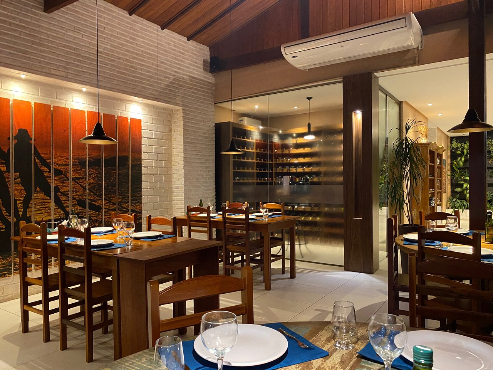
- Localização: Praia do Morro.
O Kebabs Praia une boa localização e comida de qualidade, sendo um dos melhores restaurantes de Guarapari. Totalmente pé na areia na Praia do Morro, o Kebabs é a pedida para relaxar com uma visão paradisíaca e aproveitar a gastronomia capixaba. O amplo cardápio engloba diversos frutos do mar, sendo o carro-chefe a moqueca capixaba.
O ambiente é super descontraído e bonito, excelente para ir para almoçar em família e ter um bom momento. Certamente um dos melhores lugares de onde comer em Guarapari.
A Casa do Torresmo Rotisseria é uma das pedidas certeiras se você quer provar um dos melhores drinks de Guarapari, cerveja gelada e assados no geral. Dentre as opções de cardápios há o bom e velho torresmo, arroz de polvo e o famoso brownie.
De frente para a Praia do Morro, a Casa do Torresmo oferece aos clientes uma visão incrível do mar, sendo um lugar que deve ser visitado durante o dia e durante a noite. Durante o horário do almoço, o restaurante tem pratos próprios. Durante a noite, a casa disponibiliza drinks exclusivos, disponíveis somente para o período noturno.
A Taiccos é uma steakhouse e hamburgueria bastante indicada em Guarapari, sendo o local ideal para um bom drink e boa comida. Decerto, a Taiccos tem o melhor corte de carne de Guarapari. Ela é finalizada na nossa mesa, cortada e temperada.
E junto com a carne, tome os drinks maravilhosos da casa, que são servidos em taças lindas, com uma decoração impecável. Com certeza é um ótmo local para se experimentar uma gastronomia empolgante e única.
O Dal Mare é o lugar ideal para uma noite diferenciada, para ter um jantar comemorativo, romântico ou simplesmente especial. Carnes e frutos do mar, pratos bem servidos, pastel de camarão, polvo grelhado com frutos do mar, cocada capixaba, porções bem servidas, sobremesas reinventadas.
Certamente, um dos melhores restaurantes de Guarapari, perfeito para curtir a noite e provar os melhores pratos de frutos do mar da cidade.
Principais pontos culturais
- Igreja Nossa Senhora da Conceição 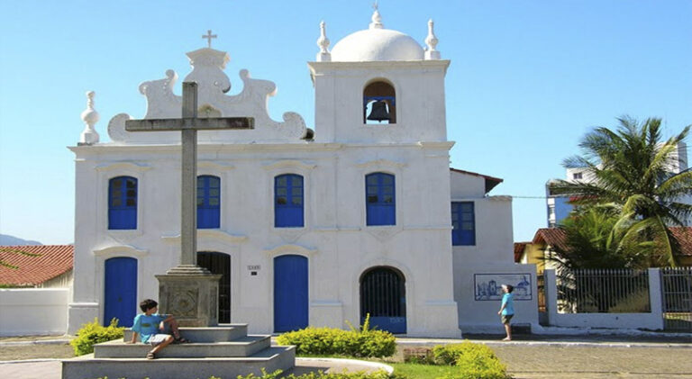
- Localização: Centro de Guarapari.
- Gruta de Sant'ana 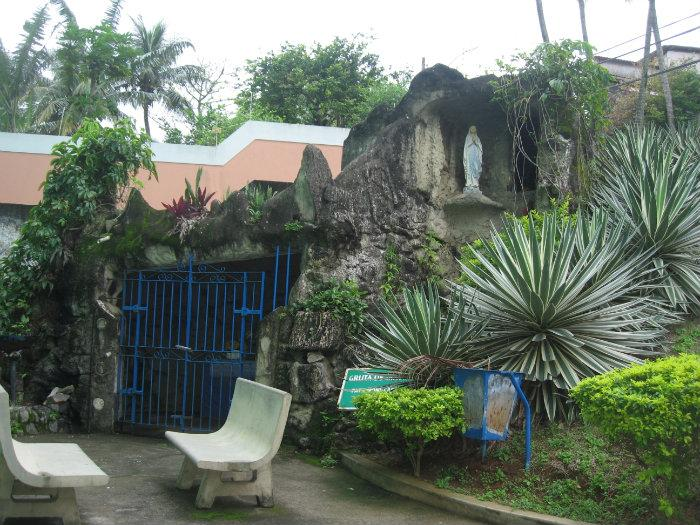
- Localização: Centro de Guarapari.
- Festa de Nossa Senhora da Conceição
- Localização: Centro de Guarapari.
- Festa de São Pedro 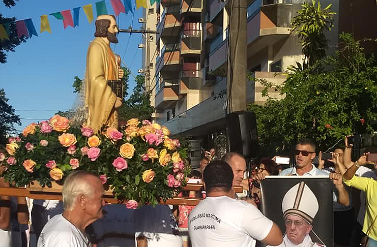
- Localização: Praia do Morro.
A Igreja Nossa Senhora da Conceição é uma das construções mais antigas de Guarapari, datando do período colonial. Com uma arquitetura simples e charmosa, a igreja é um importante ponto de fé e tradição para a comunidade local.
A igreja é um marco histórico e cultural da cidade, sendo um lugar de culto e um excelente exemplo da arquitetura colonial no Espírito Santo.
Bem próximo a antiga igreja Matriz fica a Gruta de Sant'ana, construída com pedras e restaurada em 1991. Além da imagem de N. Sra de Lourdes, no seu interior há quadros de Sant'Ana e N. Sra Menina.
Também conhecida como grutinha, fica na Ladeira Don Cavati, saindo da igreja a sua direita. Bem em frente uma casa amarela de número 80. Um local muito agradável de ser visitado!
A Festa de Nossa Senhora da Conceição é a principal celebração religiosa da cidade. A festa ocorre anualmente e inclui missas, procissões e apresentações culturais, atraindo muitos turistas que visitam Guarapari nessa época.
A festa é uma das manifestações culturais mais importantes de Guarapari, reunindo religiosos e turistas para celebrar a padroeira da cidade.
A Festa de São Pedro é uma celebração tradicional que ocorre em junho e é voltada para a cultura pesqueira de Guarapari. Durante a festa, há apresentações de música ao vivo, danças típicas e comidas típicas da região.
A festa celebra a tradição pesqueira da cidade e é uma excelente oportunidade para conhecer mais sobre os costumes e as tradições locais.